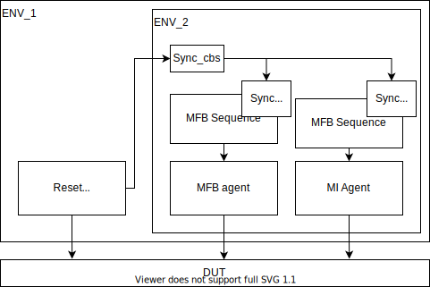

RESET agent
This agent generate one bit signal which is never have undefined value. Primary use of this agent is generating reset signal in verification.
- Package containt two major sequences.
sequence_simple - fist n random cicles generate reset and next m random cicles generates no reset. This pattern is repeating until end of simulation. sequence_rand - Reset randomly generated with some distribution. Reset is generate minimum for two cicle.
- Connect reset signal with other components
In lot of protocols is required some oredered sequences of command to handle protocol. When reset is ocurre and sequences continues in middle of comunication protocol then DUT can end in inconsistend state. This is reason why reset have to be synchronized with some sequences.
For this purpose is in package three classes sync_cbs, sync_register and sync_terminate. Class sync_cbs and sync_register is for connect more class snyc_terminated together. For example in some smaller enviroment is two sequences which bot is required on reset. Then two class sync_terminated can be connected to class sync_register. Connect casses sync_* to reset agent is with function sync_connect.
Class sync_terminated contain taks is_reset(outpu logic ret). Which return value in variable ret if last clock cycle was reset set.
Example of connection
{kind=link}
//connect reset syncrhonization object
reset_agent.sync_connect(env.reset_sync);
//example of processing in low lewer sequence
task send_transaction(byte_array hl_tr);
int unsigned it = 0;
bit reset = 1'b0;
while (reset != 1'b0 && it < hl_tr.data.size()) begin
start_item(req);
req.randomize();
req.sof = 1'b0;
req.eof = 1'b0;
req.data = hl_tr.data[it];
if (it == 0) beign
req.sof = 1'b1;
end
it++;
if (it == hl_tr.data.size()) begin
req.eof = 1'b1;
end
finish_item(req);
sync_reset.is_reset(reset);
end
//send empty frame until reset is done
while(reset) begin
start_item(req);
req.randomize();
req.sof = 1'b0;
req.eof = 1'b0;
finish_item(req);
sync_reset.is_reset(reset);
end
endtask
simple sychronous RESET agents
enviroment env#(RESETS) contain RESETS number of reset agents which generate synchronous reset for asynchronous clock domain. Synchronization mechanism is realy simple and cannot be used everyvhere. All resets agent read one value which is change ones per specified time. Time is specified in class env_config_item#(RESETS) in variable driver_delay. User have to setup up time to two times maximum of slowest reset time multiple of slowest clock. 2*max(CLK[it]*RESET_TIME[it]). Enviroment work as agent. You can run any sequence on enviroment seqeuencer which can be ran on agent sequencer
Configuration is made by class env_config_item#(RESETS) where can be configuret three thing. Active/Pasive for all agents default is all active. Name of interface for all interface. High level driver delay.